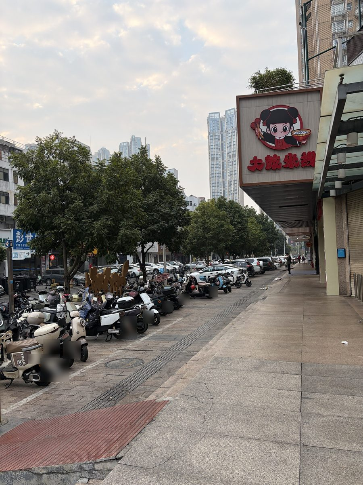
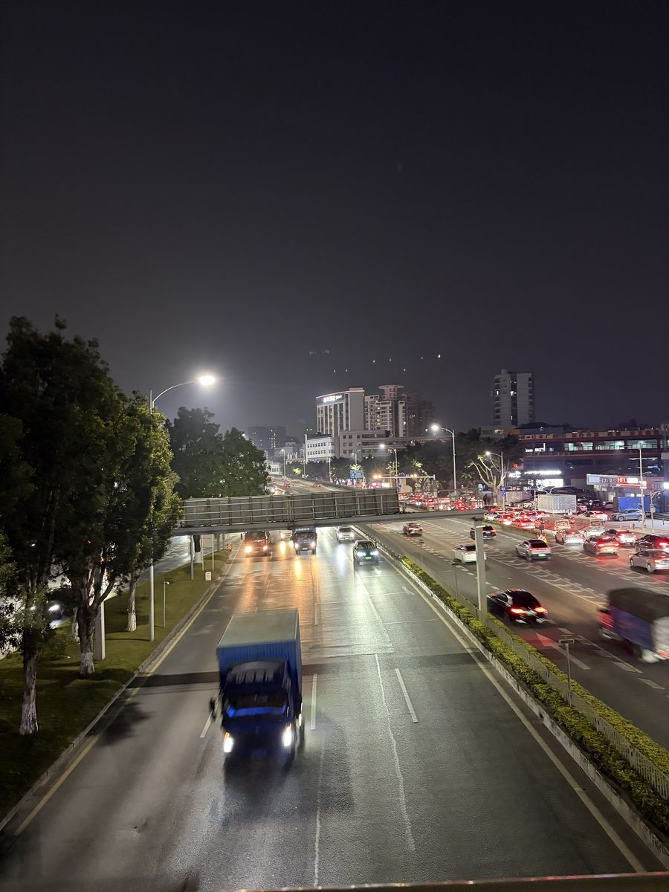
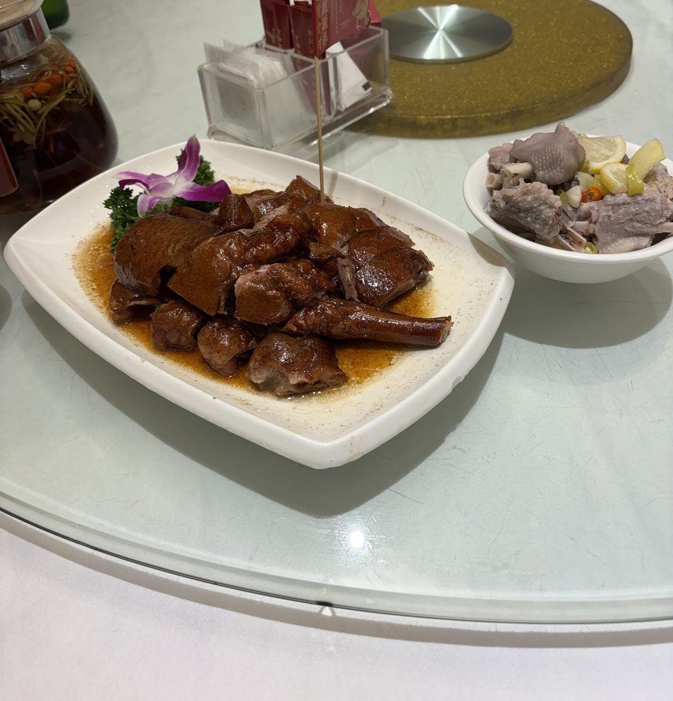

このページにはアフィリエイト広告（HIS・JTB）を含みます。 入国の条件や注意点は、日本の外務省（海外安全ホームページ）・HIS・JTBの公式サイトの情報をもとにまとめています（2026年11月14日に確認）。写真と感想は筆者が中国を訪れたときのものです。ツアーの料金は変わるため載せていません。料金・空席はリンク先で確認してください。
先に結論：中国旅行の準備で押さえたいこと
- 日本の一般旅券なら、観光などを目的とする30日以内の滞在はビザ免除（北京時間2026年12月31日24時まで。JTBの中国ページ）。期限つきの措置なので、出発前に最新情報を確かめましょう。
- 16歳以上の外国人はパスポートの携帯が義務で、ホテルや高速鉄道、主要な観光地で提示を求められます（外務省）。
- 筆者の体験では、スマホはモバイル通信があれば困らなかったそうです。くわしくは下の「筆者の声」で。
出発前に確かめること
| ビザ | 日本の一般旅券を持ち、観光を目的とする30日以内の滞在は、ビザ免除（北京時間2026年12月31日24時まで。JTBの中国ページ）。外務省の海外安全ホームページによると、対象は商業・貿易、観光、親族訪問、交流・訪問で、留学や就労などは入国前にビザが必要です。 |
|---|---|
| パスポート | 残りの有効期間は、入国時に6か月以上あるのが望ましいとされています（JTB）。16歳以上の外国人はパスポートを持ち歩く義務があり、ホテルへの宿泊、飛行機、高速鉄道、長距離バス、主要な観光地への入場で提示を求められます。なくしたときのために、写しを別に保管しておきましょう（外務省）。 |
| 入国審査 | 14歳〜70歳の外国人は、入国時に指紋の照合と顔画像の撮影があります（外務省）。 |
| 現金 | 申告なしで持ち込める外貨は、5,000米ドル相当額と2万人民元までです（外務省）。 |
| 時差 | 日本より1時間遅れています。サマータイムはありません（JTB）。 |
| お金・電圧 | 通貨は人民元。電圧は220V・50Hz（JTB）。チップの習慣は基本的にありません（HIS）。 |
| 水 | 水道水は飲まず、ミネラルウォーターを（JTB・HIS）。 |
出典：外務省 海外安全ホームページ（中国 安全対策基礎データ）、HIS・JTBの中国ページ（2026年11月14日に確認）。入国の条件は変わることがあるので、出発前にもう一度確かめてください。
筆者が深圳で感じたこと
【筆者の声】中国の街はよく掃除されていてきれいです。電気自動車がたくさん走っていて、バイクも電動が中心なので街が静かです。


【筆者の声】中国でもスマホは普通に使えて、特に困ることはありません。昔はWi-Fiが欠かせませんでしたが、今はモバイル通信(パケット)さえあれば大丈夫です。『ニーハオ』と『シェイシェイ』だけで乗り切るのは、そろそろ卒業したいなと思っています。

中国でスマホを使う方法（現地のSIM、eSIM、日本の携帯会社の海外ローミングなど）や、使えるアプリ・サービスは変わることがあります。出発前に、各社の公式情報で確かめておくと安心です。
いつ行く？
JTBの中国ページでは、天候が安定して過ごしやすいのは4月〜5月の春と9月〜10月の秋とされています。旧正月（2月初めから中旬）、5月1日、国慶節（10月1日〜7日）は中国全土が観光客で混み合うので、避けるのがおすすめとのことです。
国土が広いので、気候は地域で大きく違います。HISの中国ページによると、北部のハルビンなどは冬にマイナス30℃以下になることもある一方、南部の広州は1年中温暖で、冬でも10℃を下回ることはめったにないそうです。
中国で気をつけたいこと
- 法律の違い：外務省の海外安全ホームページは、中国が「反スパイ法」などで「国家安全」に関わる行為への対策を強めていて、幅広い行為が違反とみなされるおそれがある、と注意をうながしています。「軍事施設保護法」などに違反するとされる行為も、拘束や刑罰の対象になる可能性があります。軍や警察の施設の近くでの撮影は避けましょう。
- 道路：HISの中国ページは、車優先なので横断歩道を渡るときは左右をよく確かめるよう案内しています。
- 地下鉄：乗るときは荷物検査があります（HIS）。
- 食堂：おしぼりが有料のことが多いので、ウェットティッシュがあると便利です（HIS）。
ツアー・航空券を探す
① 自由に回るなら「航空券＋ホテル」
飛行機とホテルだけ決めて、あとは自分で動くタイプ。仕事の合間に観光する人にも。
② 安心したいなら添乗員同行のツアー
はじめての中国で不安なら、添乗員や現地係員がつくタイプのツアーを選ぶと安心です。
この記事の入国・安全の情報は、外務省・HIS・JTBの公式サイトの情報（2026年11月14日に確認）をもとにまとめたものです。写真と感想は筆者が中国を訪れたときのもので、紹介しているツアーに筆者が参加したわけではありません。入国の条件、ツアーの料金・内容は変わることがあるので、出発前に必ず公式サイトで確かめてください。